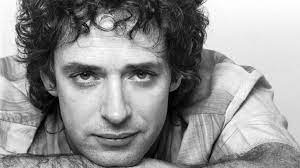
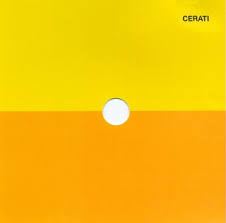
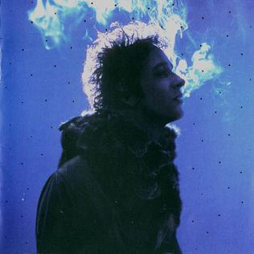

Primeros años
Gustavo Adrián Cerati nació el 11 de agosto de 1959 en el barrio Barracas, Buenos Aires (Argentina);hijo primogénito de Juan José Cerati y Lilian Clarke, quienes se conocieron trabajando como contador y taquidactilógrafa en Esso.Era de ascendencia italiana por rama paterna e irlandesa por rama materna.Sus hermanas son Estela y Laura.A los seis años lo inscribieron en un colegio estatal y, a medida que aprendía a leer, descubrió los cómics y por consiguiente su primera gran pasión: el dibujo.Lilian remembró que cada vez que Juan José volvía del trabajo, le compraba algún cómic de Superman, Tarzán o Flash, y de estos tomaba la base para crear historias como Supercerebro, parecido a Superman, o el hombre alado Argos, un símil a Batman que sobrevolaba las ciudades de noche. A los nueve años sus padres le obsequiaron una guitarra criolla, momento en que crecería su interés por la música.Dos semanas después de ese hecho, tomó clases de guitarra con una profesora y luego de mudarse al barrio Villa Ortúzar las continuó con otro maestro.
Estudió la mayor parte de la primaria y por completo la secundaria en el colegio parroquial San Roque de Villa Urquiza. A los doce años creó una banda con dos amigos de otro barrio, y en 1976, con dieciséis, armó el grupo Koala que hacía música afroamericana y en el que asumió como guitarrista rítmico, más tarde integró la banda de Manuela Bravo. A mediados de los setenta, Juan José en sus viajes de trabajo a Miami, le traía de regalo vinilos de rock difíciles de conseguir en Argentina y en uno de ellos le obsequió su primera guitarra eléctrica, una Gibson SG de color marrón.Formó parte del coro de su colegio, pero lo retiraron por indisciplina; en la parroquia del establecimiento compuso sus primeras canciones, como la religiosa «Desértico» que tocaba en misa, y una navideña con base de rock progresivo con la que obtuvo el segundo lugar con Koala en un concurso musical que tuvo en los jurados a León Gieco y Carlos Cutaia, organizado y emitido en Canal 9. A pesar de ser felicitado por uno de los sacerdotes, no lo reintegraron al coro.
Cerati dijo que la música salvaba su vida; en 1978 tenía que cumplir con el servicio militar obligatorio, y logró salirse gracias a un concurso folclórico al que ingresó. Al año siguiente, se inscribió en la Universidad del Salvador para estudiar publicidad. A comienzos de los ochenta, paralelo a sus estudios, participó en dos conjuntos diferentes: Existencia Terrenal (ET) de rocanrol y rhythm and blues, con quien descubrió a bandas como Sex Pistols y The Police, y Vozarrón de fusión que mezclaba jazz, rock y folclore, en el que era guitarrista, mas no el compositor. Junto con dos cantantes inglesas creó Savage, que tocaba soul y música disco en cabarés y fiestas judías. Cerati recordó de esas presentaciones, que improvisaba canciones lentas en el momento y hacía «versiones inventadas», pero a la gente solo le preocupaba bailar. Al mismo tiempo componía temas y era parte de un trío llamado Triciclo, con este grabó un reggae titulado «Ay, nena, ¿cómo vas a hacer?», difundido en un programa de Radio Rivadavia, y que fue la primera canción que registró en la Sociedad Argentina de Autores y Compositores (SADAIC).
influencias

Influenciado por las bandas británicas The Beatles y The Police, Cerati integró diversas agrupaciones desde su adolescencia y en 1982 fundó la banda de rock latino Soda Stereo. Líder y principal compositor del conjunto, a partir de Signos (1986) su forma de hacer canciones comenzó a madurar, y su consolidación la alcanzó a comienzos de los años 1990 con Canción animal, en el que volvía a las raíces del rock argentino de los años 1970. Paralelo a su carrera con el grupo, en 1992 publicó a dúo con Daniel Melero el álbum Colores santos, considerado uno de los primeros en Sudamérica en incluir música electrónica, y al año siguiente, el primero como solista, Amor amarillo. Su gusto por la electrónica lo llevó a incorporarla a sus últimos trabajos con Soda Stereo. Después de la separación de la banda, lanzó Bocanada (1999) y Siempre es hoy (2002), donde mostró más su interés por el género, que manifestó libremente en sus proyectos alternos Plan V y Ocio, con la edición de álbumes y presentaciones que le dieron mayor difusión a este tipo de música.
En 2006, retomó el estilo roquero con su cuarto disco Ahí vamos, que recibió elogios del público y de la crítica, dicho trabajo contiene algunos de sus éxitos en solitario como «Crimen», «La excepción», «Adiós», «Lago en el cielo» y «Me quedo aquí». En 2007, se reunió con Soda Stereo tras diez años de separación en una gira que reunió a más de un millón de espectadores. En 2010, quedó en estado de coma tras padecer un accidente cerebrovascular, luego de finalizar un concierto en el que promocionaba su último álbum, Fuerza natural (2009). Falleció a la edad de 55 años a causa de un paro respiratorio en 2014.
Cerati fue un prolífico sesionista, estuvo como guitarrista invitado en temas de Caifanes, Babasónicos y Los Brujos, y colaboró en canciones con Charly García, Andrés Calamaro, Shakira, Andy Summers, Roger Waters y Mercedes Sosa, entre otros. A lo largo de su carrera como solista, vendió más de siete millones de discos y ganó numerosos premios, entre ellos Grammy Latino, MTV, Konex y Gardel. En 2012, la versión argentina de la revista Rolling Stone posicionó a Cerati en el séptimo lugar de los cien mejores guitarristas del rock argentino. En 2023, la revista Billboard lo ubicó en el puesto número 33 de los 50 mejores cantantes de rock de todos los tiempos, mientras que la revista estadounidense Rolling Stone lo clasificó en el puesto 230 en su lista de los 250 mejores guitarristas de todos los tiempos.
Su discografía
En 1998, Plan V lanzó un álbum en conjunto con el grupo inglés The Black Dog, Plan Black V Dog. Cerati dudaba si sacarían un tercer disco: él vivía en Argentina, otro integrante en Alemania, y el resto en Chile. En octubre apareció como músico invitado en el concierto de Los 7 Delfines en el Teatro Regio, y el 20 de noviembre hizo debut como solista en el Festival Inrockuptibles del Centro Cultural Recoleta, inicialmente sin compañía, pero luego sumó a Flavio Etcheto y Leo García como apoyo en samplers; más tarde le correspondió el turno a Plan V, en su aparición final. Para la última parte, Cerati presentó su nuevo proyecto electrónico, conformado con Etcheto: Ocio. En 1999, el dúo lanzó su primer trabajo: Medida universal, bajo la etiqueta Ámbar, subsello de BMG creado por el propio Cerati.
Cerati venía de un modo de trabajar en el que por años tenía que buscar la aprobación de sus compañeros de banda y limitarse a lo que ellos pudieran decir. Ahora tenía absoluta libertad creativa, mientras pasaba por un buen momento familiar con sus hijos en su nuevo hogar, donde armó su estudio Casa Submarina para grabar su segundo álbum solista, al que denominó el primero «sin el amparo» de Soda Stereo, puesto que su antecesor lo hizo aún siendo miembro. Ante una expectativa inédita por la presentación formal de Cerati como solista de parte de la prensa argentina en el rock local, el 28 de junio publicó Bocanada con un recibimiento inicialmente tibio del público y casi indiferente de la crítica, que destacó su nivel de producción como en «Verbo Carne», grabada con la Orquesta Sinfónica de Londres en Abbey Road Studios. Por otro lado, la crítica y el público de México y Chile lo recibió con más entusiasmo. Supuso «un presagio de lo que vendría después del rock latino», de acuerdo con el diario en línea El Mostrador: «Más de una vibración digital y electrónica, y menos del rocanrol tradicional cargado de guitarras», lo que llevó al rechazo inicial que cambió con el tiempo, hasta considerarse un disco icónico del rock argentino y latino; recibió la certificación de disco de oro en Argentina. En 2023, la revista estadounidense Rolling Stone clasificó a Bocanada en el segundo puesto de entre los 50 mejores álbumes del rock latinoamericano. El crítico de rock David Cortés Arce mencionó: «Bocanada es un álbum fundamental en la historia del rock iberoamericano, y en general, de todos los países hispanoparlantes».
En agosto de 1999, MTV eligió a Cerati como el artista del mes, y, a finales de año, el suplemento NO de Página/12 lo nombró el mejor artista de la década, junto con Charly García. En los premios Gardel de 2000 ganó a mejor artista rock y mejor diseño de portada. La canción «Puente» se convirtió en su primer éxito solista, nominada a un Grammy Latino como mejor canción de rock y considerada una de las mejores del rock argentino por MTV y Rolling Stone. La última señaló que «“Puente” es la canción himno de un álbum de reinvenciones», además, una de las pocas del disco que no «incluye fragmentos ajenos» mediante sampleos.
Después de que hiciera Bocanada la mayor parte solo, con tiempo sin tocar en vivo, Cerati estaba entusiasmado en presentarlo gracias a la banda que formó para ello constituida por Flavio Etcheto (teclados y samplers), Leo García (secuencias, teclados y coros), Fernando Nalé (bajo) y Martín Carrizo (batería). La gira Bocanada inició el 25 de septiembre de 1999 en México; hizo seis actuaciones llenas en el Teatro Gran Rex en octubre, ante un público frío con su nuevo trabajo que le pedía temas de Soda Stereo, pero no accedía. En junio de 2000, con la banda mexicana Café Tacvba hizo una serie de conciertos por México y Argentina bajo el nombre de la gira Bocanada al revés (en fusión con Revés/Yo soy); Cerati en su estado de visita abría a los locales, mientras que en su país cerraba, uniéndose a la actuación de Café Tacvba para cantar «Juego de seducción». Ese año Ocio editó el EP Insular, que llevó al dúo ser partícipes del festival Sónar en Barcelona (España).
En 2001, Cerati protagonizó y compuso la música de la película +bien de Eduardo Capilla, que tuvo una recepción débil en la prensa y el público, mientras que el álbum sí fue bien recibido y lo nominaron a mejor álbum instrumental pop en los Grammy Latino. La cinta trata sobre tres exmédicos amigos (Cerati, Damián De Santo y Atsushi Mizukawa) que siguen en su vocación humanista de preocuparse por el bien. Cerati interpreta a Jorge, que ayuda a una joven herida encarnada por Ruth Infarinato. En su debut como actor, confesó que a lo largo de su carrera había recibido muchas ofertas, supuso que por su «cierto histrionismo». Entre los papeles que rechazó destacó el de Tanguito en Tango feroz; luego de leer el guion descubrió que tendría que hacer como que cantaba, cuando en realidad los temas los harían Fito Páez, entre otros, en lugar de usar los originales.
Sucesivamente publicó el álbum en vivo 11 episodios sinfónicos, donde interpretó canciones de todas sus etapas —de los once en total, siete de Soda Stereo en clave de violines, clarinetes, arpas y oboes, ejecutadas por una orquesta sinfónica de cuarenta instrumentistas. Las versiones a los temas de su exbanda generaron descontento entre los seguidores, al punto de que Cerati tuvo que aclararles de que solamente eran nuevas lecturas, y que no competían con las originales. El álbum, grabado en agosto en el Teatro Avenida, tuvo grandes ventas en México, país donde lo mostró con público lleno en el Auditorio Nacional, después lo presentó de forma oficial en el Teatro Colón y seguió en una gira por salas de Venezuela, Chile y Argentina, acompañado en todas por orquestas locales.
El 26 de noviembre de 2002 lanzó su tercer álbum solista Siempre es hoy, producido por Sacha Truijeque y Toy Hernández, y con las participaciones de Charly García, Domingo Cura, Camilo Castaldi «Tea-Time», y Deborah de Corral. Marcado por su separación con Aménabar y su nueva relación con De Corral, combinó su devoción por la electrónica con el regreso de su lado roquero lleno de guitarras, a la vez que incursionaba en otros géneros como hip hop y rap. Si bien, figuró entre los cinco discos más vendidos de diciembre en Argentina, y los sencillos «Cosas imposibles», «Karaoke» y «Artefacto» tuvieron amplia difusión, la crítica juzgó la dispersión del álbum. Siempre es hoy le valió su única nominación a los Premios Grammy en la categoría mejor álbum de rock latino/alternativo. Con la publicación de las remezclas Reversiones: Siempre es hoy (2003), el periodista Pablo Strozza dijo que Cerati «se redimió» luego de haber dado un «paso en falso», gracias a estas versiones electrónicas de los temas.
La gira Siempre es Hoy abrió en Quito (Ecuador) y abarcó América y España entre finales de 2002 y fines de 2004, con 48 conciertos. Lo acompañó su nueva banda compuesta por Flavio Etcheto (samplers), Fernando Nalé (bajo) —como únicos miembros de la anterior—, Leandro Fresco (teclados y coros), Pedro Moscuzza (batería) y DJ Zucker (scratches y loops). En octubre de 2003 asistió a la segunda edición de MTV Video Music Awards Latinoamérica con cuatro nominaciones, interpretó en directo «Artefacto» en el evento. A finales del mismo año, mientras estaba de gira, formó junto con Etcheto y Fresco el trío laptop Roken;hicieron actuaciones en fiestas, sobre todo en Estados Unidos, pero formalizaron el proyecto en el festival Mutek en Chile. Roken grabó sus presentaciones a lo largo de América Latina con la idea de editar un álbum en vivo, jamás concretado.
En 2004, Cerati publicó el álbum recopilatorio Canciones elegidas 93-04 en CD+DVD; sugerido para editarlo en España, lo lanzó también en América Latina y Estados Unidos, pero con un listado de canciones distinto que incluyó «Tu locura», que hizo para la serie de televisión Locas de amor,nominado a tema musical original en los Premios Martín Fierro. En abril de 2005, apareció como invitado sorpresa de Los Pericos en la sexta edición del festival Vive Latino.
El 4 de abril de 2006 sacó su cuarto álbum Ahí vamos, que coprodujo con Tweety González. Lanzado simultáneamente en Argentina y México, en el primero logró disco de platino por la venta anticipada de 40 000 copias, y en el segundo disco de oro semanas después, mismo que recibió en Chile. La guitarra esta vez lidera por completo con el enfoque roquero, Roque Casciero de Páginas1/2 dijo que Cerati en Siempre es hoy había mostrado una imagen «algo desdibujada de un artista central para la historia del rock argentino», como si hubiera «perdido el foco por un rato», al contrario de Ahí vamos, que no dudó en llamarlo su mejor trabajo solista: «Un vibrante disco de rock, clásico y moderno al mismo tiempo». El primer corte del disco, «Crimen», que rompe el molde con una power ballad que incluye un piano, hizo debut en el número uno de las radios argentinas. Ahí vamos y «Crimen» ganaron a Mejor álbum vocal y Mejor canción rock en los Grammy Latino 2006. Cerati cerró el año consagrándose como solista con la aceptación del público. En los Premios Gardel 2007 arrasó en seis categorías más el Gardel de Oro, logrando un récord que repetirían después David Lebón en 2020 y Wos en 2022. En la edición 2008 Ahí vamos sumó el trofeo a mejor DVD. Los demás sencillos «La excepción», «Adiós», «Lago en el cielo» y «Me quedo aquí» también destacaron.
Cerati en 2007 presentándose en el Festival de Viña (arriba) y con Soda Stereo en Ecuador (abajo)
La gira Ahí Vamos inició el 1 de junio de 2006 en Ciudad de México y siguió por América Latina, Estados Unidos, España y Londres, con 76 conciertos en total. La nueva alineación de la banda integraba a Richard Coleman (guitarra), Fernando Samalea (batería), Fernando Nalé (bajo) y Leandro Fresco (teclados y coros). El 23 de febrero de 2007, Cerati participó en el XLVIII Festival Internacional de la Canción de Viña del Mar, mismo certamen en el que estuvo veinte años antes con Soda Stereo. El Monstruo de la Quinta Vergara lo premió con las dos artorchas y la gaviota de plata. El 10 de marzo actuó en el cierre del concierto gratuito Verano 07, auspiciado por el gobierno de la ciudad de Buenos Aires (GCBA), con una concurrencia aproximada de 200 000 personas frente al Monumento a Güemes.En junio la gira dio por terminada, luego del anuncio del retorno de Soda Stereo.Un mes después, Cerati se unió a Shakira para interpretar juntos el tema «Día especial» en el Live Earth de Hamburgo (Alemania) y después en un concierto en Estambul (Turquía).
Soda Stereo en su gira de reunión, Me verás volver, hizo seis conciertos nuevamente en el Estadio Antonio Vespucio Liberti, la primera banda de rock latinoamericano en hacer esa cantidad en una sola gira, superando el récord de The Rolling Stones con cinco. Con veintidós fechas en total, en nueve países, entre octubre y diciembre, juntó a más de un millón de espectadores. En abril de 2008 el trío recibió el premio Personalidad Musical del Año por la CAPIF, Cerati dijo que resumieron el período como «una burbuja en el tiempo» porque «fue algo increíble», pero que no iban a alimentar expectativas: «de aquí en más cada uno sigue su camino por separado». En la ceremonia tocó por última vez con Soda Stereo, Andrea Álvarez reemplazó a Charly Alberti. En 2008 hizo varias apariciones como invitado, incluida en las actuaciones de Fito Páez y Shakira en el concierto organizado por la Fundación América Latina en Acción Solidaria (ALAS) en la antigua Ciudad Deportiva de Boca Juniors en mayo, en el concierto de Emmanuel Horvilleur en el Teatro Gran Rex en agosto, y en la presentación de Bajofondo en el festival Creamfields en noviembre.
En julio de 2009 regresó como solista con el sencillo «Déjà vu». El 1 de septiembre lanzó el álbum Fuerza natural, ligado más al sonido de guitarras acústicas folk y country. Cerati definió el álbum «ambientado hacia el cine», en ese sentido, pretendía sacar todas las canciones en «un único y gran videoclip» en forma de película o road movie. Logró un disco de oro por las ventas anticipadas, y más tarde, disco de platino. Además de Argentina, ocupó el primer lugar en ventas también en México, Colombia, Perú y Chile, así como el más vendido en la tienda latina de iTunes en la primera semana. Cerati lo consideró el más satisfactorio de su carrera,y que de ser el último se iría contento. Coleman reveló: «Él mismo dijo que después de este disco me puedo morir tranquilo. En perspectiva suena horrible, pero refleja lo que él pensaba sobre este disco. Todos los músicos cercanos a él compartimos esa idea, que es el mejor». Varios analistas concuerdan de que es su mejor obra, la revista española Zona de Obras dijo: «se trata, que nadie lo dude, de uno de sus mejores trabajos. Tal vez porque ya pasó la curva de los cincuenta y la experiencia le sumó aplomo a su idea del pop-rock, que incluye guitarras en llamas, una voz privilegiada y canciones elaboradas que en su complejidad nunca resignan frescura». Otros críticos fueron menos entusiastas, describiéndolo como «apagado», «endeble», «magro y mezquino». Estas últimas palabras causaron molestia a Cerati y llamó «imbécil» al periodista responsable: Marcelo Contreras.
Cerati tocando en Monterrey, en el inicio de la gira Fuerza natural. Cuando la actuación cumplió diez años la proyectaron en cines de América Latina, Estados Unidos y España, y editaron un CD doble+DVD titulado Fuerza Natural Tour, en vivo en Monterrey, MX, 2009, que la revista Billboard eligió como uno de los 50 mejores álbumes latinos de la década y ganó el Premio Gardel 2020 a mejor álbum en vivo.
Fuerza natural y «Déjà vu» tuvieron varios logros, premios y reconocimientos: en las listas Billboard: Top Latin Albums (puesto 53), Latin Pop Albums (puesto 10), Latin Pop Airplay (puesto 32), Mexico Espanol Airplay (puesto 9) y Mexico Airplay (puestos 14); en Rolling Stone: puesto 5 dentro de los mejores discos de 2009, primer lugar en Top cinco de clips nacionales y puesto 12 en las cien mejores canciones del año; lideraron en las encuestas del suplemento S! de Clarín en mejor disco y mejor tema —además, Cerati mejor artista solista—, mejor canción del año y mejor álbum de rock en los premios Gardel 2010, dentro de siete categorías en las que se impuso Cerati, además de su segundo Gardel de Oro, y mejor álbum rock, mejor canción rock y mejor diseño de portada en los Grammy Latinos 2010.
Su banda era la misma de Ahí vamos, sumó a Anita Álvarez de Toledo en coros y Gonzalo Córdoba en guitarra. La gira Fuerza Natural inició el 19 de noviembre de 2009 en el Estadio de Béisbol de Monterrey. Debió reprogramar la fecha en Chile a causa de una amigdalitis purulenta con un cuadro febril, por primera vez en toda su carrera no suspendía un concierto por problemas técnicos. Cerró su segundo tramo el 15 de mayo de 2010 en el Estadio de fútbol de la Universidad Simón Bolívar de Caracas (Venezuela).




.jpg)